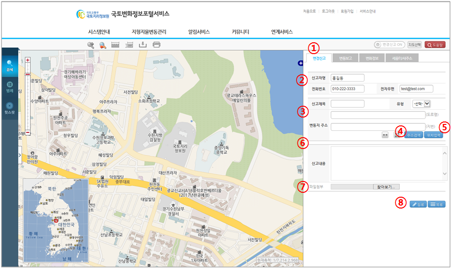

지형지물변동 > 지도변경신고 (일반 사용자 신고) 문의 :031-210-2715
| ① |
|
|
| ② | 현재 변동정보 신고하는 사용자의 정보가 보여진다. | |
| ③ | 변동정보신고의 기본 신고 정보를 입력한다. | |
| ④ | [주소검색] 버튼을 클릭하면 주소 검색으로 변동지주소 입력을 수행한다. | |
| ⑤ | [위치입력] 버튼을 클릭하여 지도상에서 신고위치를 입력한다. (공지사항 2번 게시물의 첨부 문서 12페이지 참조) | |
| ⑥ | 변동정보신고의 신고내용을 입력한다. | |
| ⑦ | 파일을 첨부할 경우 [파일첨부] 버튼을 클릭하여 파일을 첨부한다. | |
| ⑧ | [신고] 버튼을 클릭하여 변동정보신고내역을 신고한다. 신고가 완료되면, 지도변경 조회창이 나타난다. (공지사항 2번 게시물의 첨부 문서 13페이지 참조) |
|
| ⑩ | [취소] 버튼을 클릭하여 변동정보신고를 취소한다. |